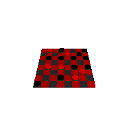

|  |
Wischk is a checkers playing program I wrote several years ago. It
should compile (with some mostly harmless warnings) and run under
unixes with a curses interface or under DOS using Turbo C++ 3.0,
although it should be easy to port to other environments. You can
play against it interactively and it knows a simple protocol for
playing against other checkers-playing programs (even different
versions of itself).
Wischk uses a progressive deepening alpha-beta search enhanced with simple heuristic continuation. Its static evaluator uses some twelve heuristics and can be tuned a little by changing the weights that are applied to each heuristic (some students at Georgia Tech worked on a project to improve the default weights using a genetic method). Wischk comes with a manual page. Wischk is written in basic C++. The source code is available, such as it is:
Or you could just get the DOS executable (94K). |
|
John Wiseman / wiseman@inetmi.com
Jun. 7, 1998
|